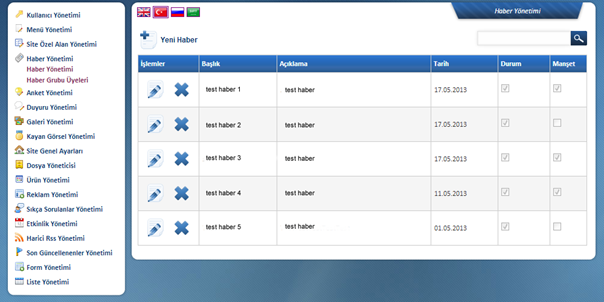
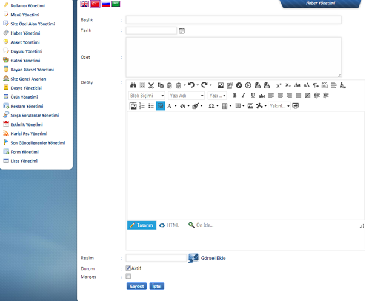

Sitede bulunacak haberlerin yönetim panelinde giriþinin yapýldýðý alandýr.

Yeni Haber Butonuna
Týklandýktan Sonra

Yukarýda da görüldüðü gibi haberin baþlýðý, tarihi ve özeti girildikten sonra detay kýsmýna haberin tüm içeriði girilmelidir. Sitede haberin özet kýsmý gözüktüðünde habere ait bir fotoðraf kullanýlmak isteniyor ise bu bölümde Resim yazýlý alandan Görsel Ekle diyerek sitedeki fotoðraflarýn bulunduðu ve baþka kaynaklardan da fotoðraf yüklenebilecek Dosya Yöneticisi ne yönlenecek ve buradan fotoðraf eklenebilecektir.
Haberin sitede gözükmesi için Durum kýsmýnda Aktif i iþaretlemek ve eðer haber manþet olacak ise Manþet þeçeneðinin de iþaretlenmesi gerekmektedir.